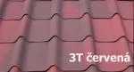
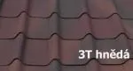
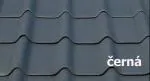
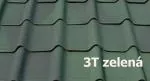

Mimoriadne kvalitná strešná a obkladová vlnitá krytina z organických vlákien. Tieto vlákna sú sýtené bitúmenom a tvarované tlakom pri vysokej teplote do tvaru vlnitých dosiek.
Od roku 1945 vyrábame vlnitú krytinu Onduline z organických vlákien sýtených bitúmenom v 4 farbách.- červenéj, hnedéj, čiernej, zelenéj.
Onduline vlnitá krytina je ideálna na transport, manipuláciu a skladovanie a z hľadiska technológie montáže je použiteľná pre široké spektrum zákazníkov na všetky typy striech od sklonu 5°.
Použitie vlnitej krytiny Onduline
Ľahká strešná krytina Onduline je vhodná na hospodárske stavby, rekreačné objekty i občiansku výstavbu. Majiteľ ocení úžitkové vlastnosti, nízku cenu, veľkú kryciu plochu s malým odpadom, skrátka ako sa hovorí: "ideálna kombinácia dobrej kvality a vynikajúcej ceny."
Výhody vlnitej krytiny Onduline
- jednoduché skladovanie (na 2 m² plochy môžete skladovať až 500 m² vlnitej krytiny)
- jednoduchý transport vlnitej krytiny (aj osobným autom je možné odviezť cca 50 m² strechy)
- jednoduchá a rýchla montáž (aj laik položí svoju cca 50 m² veľkú strechu za niekoľko hodín)
- Onduline vlnitá krytina je ľahká a elastická – vhodná aj na oblúkové strechy
- zdravotne neškodná strešná krytina – neobsahuje azbest
- veľmi nízka cena a úspora nákladov na krov.
- kompletný systém doplnkov na celú strechu
Jedinečnosť dosiek Onduline – chránená patentom
- Jednovrstvový systém výroby nedochádza k separácii vrstiev
- Sfarbenie povrchu dosky PP sú sfarbené sýtením do vlákien materiálu
- Pevnosť a trvanlivosť špeciálne zloženie bitúmenu a jeho prímesí sú výrobným tajomstvom
Onduvilla
Firma Onduline vyrába od roku 2002 vlnitú bitúmenovú škridlu Onduvilla z organických vlákien sýtených bitúmenom v 7 farbách. Na slovenský trh sú zatiaľ uvedené 3 farby (červená 3-tónovaná, hnedá 3-tónovaná a čierna), ale neskôr bude možnosť objednať si ďalšie (červená, hnedá, zelená atď.). Onduvilla je ideálna na transport, manipuláciu a skladovanie (balík 15 ks váži 19 kg a má rozmery 106 × 40 × 10 cm)
Z hľadiska technológie montáže je použiteľný pre široké spektrum zákazníkov na všetky typy striech od sklonu 17°.
Použitie
Ľahká strešná asfaltová škridla Onduvilla je vhodná na rekreačné objekty aj občiansku výstavbu. Majiteľ ocení úžitkové vlastnosti, nízku cenu a jednoduchú montáž.
Onduvilla je jednoduchá, elegantná a spoľahlivá.
Výhody Onduvilla
- jednoduchý transport (osobným autom sa dá odviezť cca 50 m² strechy)
- jednoduchá a rýchla montáž (aj laik položí svoju cca 50 m² veľkú strechu za niekoľko hodín)
- Onduvilla je ľahká a ekonomická asfaltová škridla
- zdravotne neškodný výrobok – neobsahuje azbest
- veľmi nízka cena a úspora nákladov na krov.
- Kompletný systém doplnkov na celú strechu výška 40 cm počet ks/m² 3,23 šírka 106 cm počet klincov/m² 20 hrúbka 3,0 mm počet ks/balenie 15 výška vlny 40 mm hmotnosť balenia 19 kg krycia plocha 0,31 m² počet m² v balení 4,65 m² hmotnosť (ks) 1,27 kg počet balení na palete 60




Onduclair pc – polykarbonát
Onduclair PC sú vlnité a trapézové dosky na báze polykarbonátu. Sú vhodné ako ľahké strešné krytiny na pergoly, altány, presvetľovacie konštrukcie alebo ako presvetľovací doplnok dosiek Onduline.
Použitie
- zahradné pergoly
- prístrešky
- priemyselné haly a plochy s potrebou presvetlenia Polykarbonátové krytiny Onduclair PC majú podobné využitie ako PVC krytiny, ale podstatne vyššie hodnoty tepelných odolností a mechanických vlastností oproti krytinám PVC.
Výhody
- vysoká pevnosť a pružnosť
- vysoká odolnosť proti prerazeniu a prasknutiu
- vysoká priepustnosť svetla (cca 85 %) Vysoko koextrudovaná UV ochrana zvyšuje kvalitu a životnosť PC krytiny a materiál tak vykazuje vysokú chemickú odolnosť, odoláva pôsobeniu zásad aj kyselín. Je však potrebné sa vyvarovať pôsobeniu rozpúšťadiel.
Farby Onduclair PC
- číra
- priesvitná (ľahko mliečna)
- bronz (dymová)